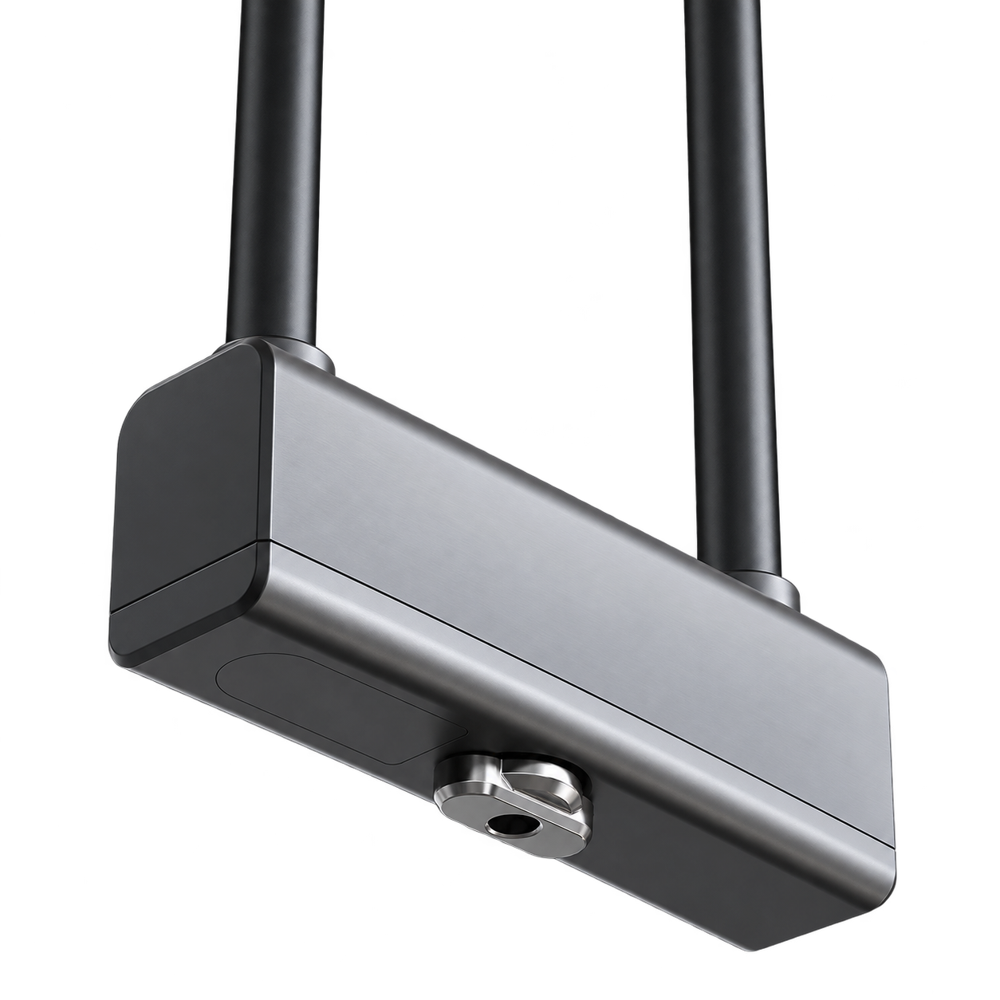

Ankommen. Knopf drehen.
Dein iPhone erkennt die Rückkehr zu deinem Bike und kann das Schloss per Bluetooth freigeben. So musst du zum Öffnen nicht jedes Mal die App herausholen.
So funktioniert’sGeplant: CHF 9.95 einmalig · noch nicht im App Store verfügbar
Für kompatible BLACK X RockSolid U-Locks und ein berechtigtes BLACK-X-Konto. iPhone mit iOS 17 oder neuer. Schloss separat erhältlich.

So funktioniert’s
Einmal einrichten
Mit deinem bestehenden Konto anmelden, Bike auswählen und einmal manuell öffnen. Danach Auto-Unlock aktivieren.
Weggehen und zurückkommen
Nach mindestens 30 Sekunden erkanntem Weggehen löst ein kurz stabiles Nahsignal einen Versuch aus. Die Schwelle stellst du selbst ein.
Beim Piepsen drehen
Den Knopf innerhalb von sechs Sekunden drehen. Die Freigabe verwendet nach der Einrichtung die gespeicherte Berechtigung, ohne Internet.
Ein Tippen, wenn du es brauchst.
Home- und Sperrbildschirm-Widgets sowie Kurzbefehle starten eine manuelle Öffnung in der App. Die letzte Schlossbatterie und optionale Warnungen helfen dir, rechtzeitig zu reagieren.
Ohne Schloss ausprobieren
In der App auf „Demo ausprobieren“ tippen. Manuelles Öffnen, Weggehen/Rückkehr, Schwelle und Batteriewarnungen lassen sich mit klar gekennzeichneten Beispieldaten ausprobieren.
Bluetooth-Signal und iOS beeinflussen die Erkennung. Auto-Unlock kann verzögert sein. App nicht wegwischen; nach einem Neustart einmal öffnen. Die App erkennt nicht, ob der Bügel physisch offen ist.
Kontakt
Schreibe uns mit dem Betreff Bike Auto Unlock.